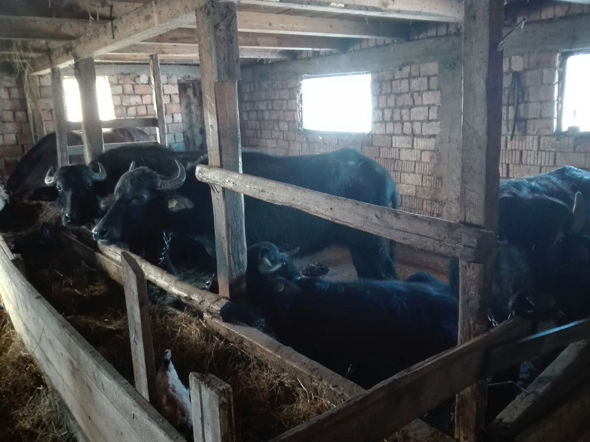
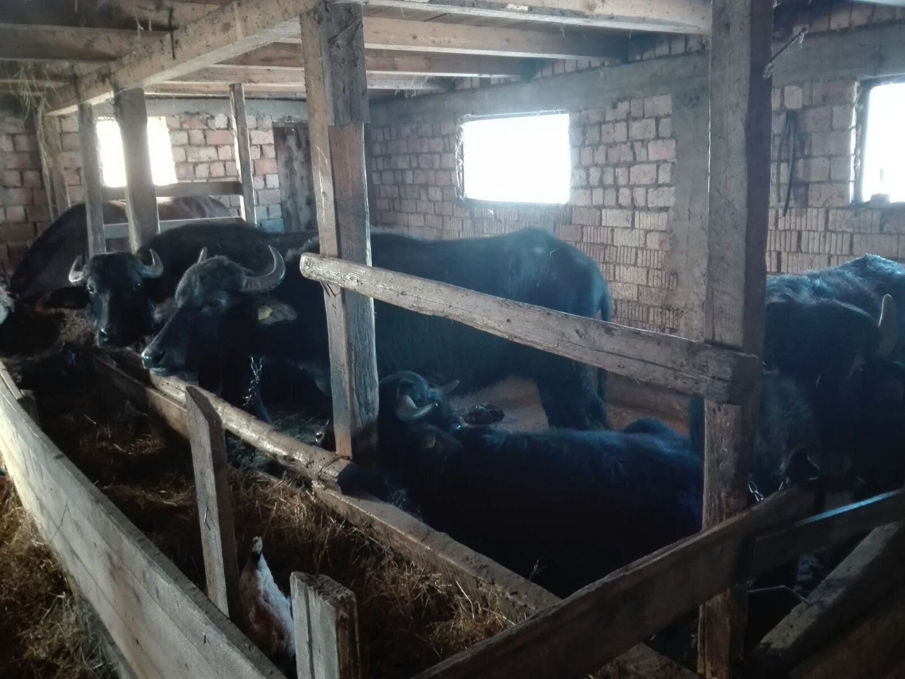
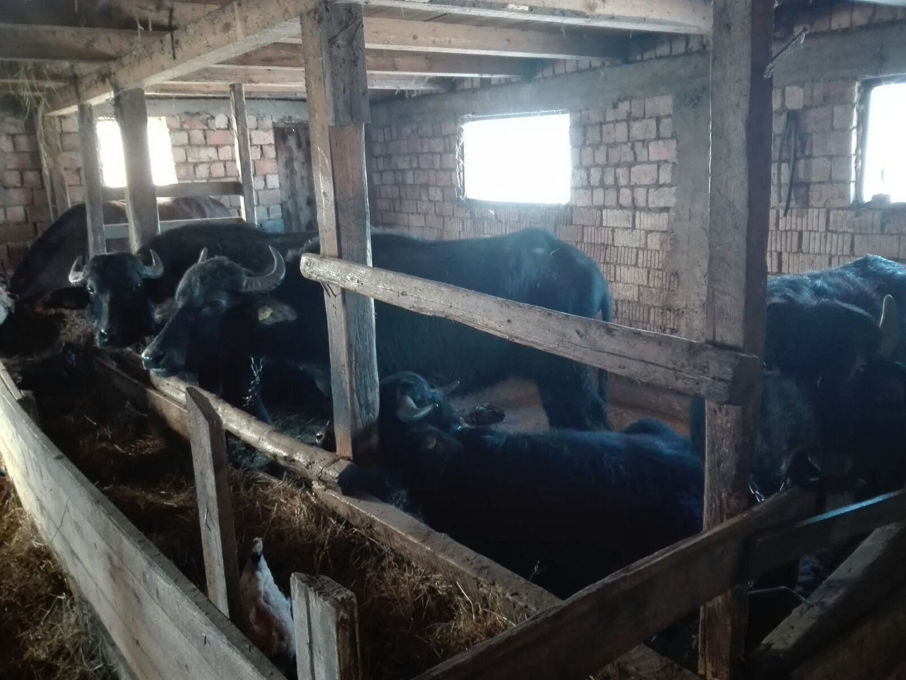

Bovinele dețin o importanță deosebită asupra casei țăranului care le folosește pentru carne,
transport si cel mai mult pentru lapte din care se obține la rândul său brânza, smântâna etc.

Vițeii aduc o cantitate semnificativă de carne având mare importanță pe meleagurile rurale.
Bivolii își cunosc locuința astfel încât nu au nevoie de cineva care să îi împingă de la spăte pentru
a intra pe propria poartă.
Pe timpul verii se aduna fân ca hrană pentru iarnă, unde tot cu bivolii se asigură și transportul de pe
câmp la locul de depozitare.
 
